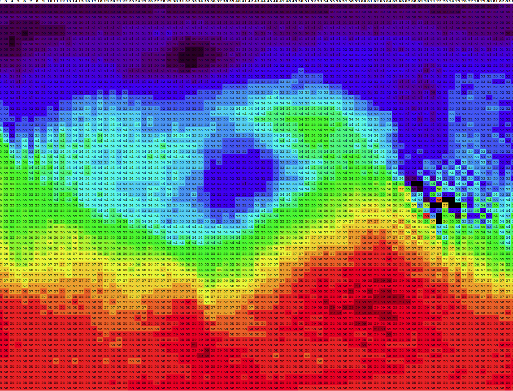
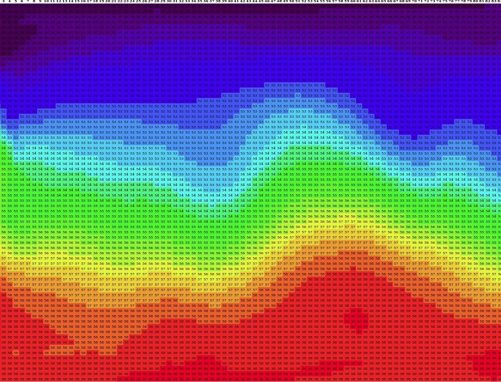
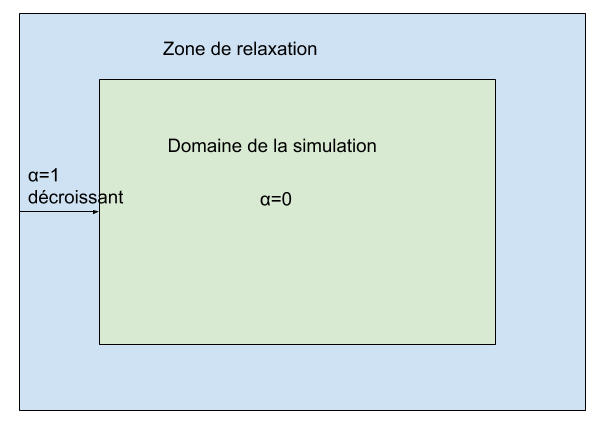

this.filtreMoyenneX = function(a, v, res)
{
for (var y=0;y<this.height;y++)
{
var i = y*this.width;
res[i] = a[i];
for(var x=1;x<this.width-1;x++)
{
var i = x+y*this.width;
res[i] = a[i]*(1-v)+(a[i+1]+a[i-1])*v/2;
}
i = this.width-1+y*this.width;
res[i] = a[i];
}
}
this.filtreMoyenneY = function(a, v, res)
{
for (var x=0;x<this.width;x++)
{
var i = x+this.width*(this.height-1);
res[x] = a[x];
res[i] = a[i];
}
for (var y=1;y<this.height-1;y++)
{
var i = y*this.width;
res[i] = a[i];
for(var x=1;x<this.width-1;x++)
{
var i = x+y*this.width;
res[i] = a[i]*(1-v)+(a[i+this.width]+a[i-this.width])*v/2;
}
i = this.width-1+y*this.width;
res[i] = a[i];
}
}
this.filtre = function (a)
{
var tmp = [];
this.filtreMoyenneX(a, 0.5, tmp);
this.filtreMoyenneX(tmp, -0.5, a);
this.filtreMoyenneY(a, 0.5, tmp);
this.filtreMoyenneY(tmp, 0.5, a);
}
Le filtrage a l'inconvénient de nécessiter un peu de calculs supplémentaires, mais cela reste gérable. Au niveau du résultat, on constate que cela lisse un peu les champs sans trop altérer les grandes structures. A la résolution où l'on travaille, on voit rapidement que les dorsales ou thalwegs un peu faibles vont se combler plus rapidement. Mais les problèmes d'instabilités locales sont réglés.


this.couple = function(x, c)
{
for (var i=0;i<this.height*this.width;i++)
{
x[i] = (1-this.alpha[i])*x[i] + this.alpha[i]*c[i];
}
}
A la fin de chaque étape de calcul on ajoute les appels nécessaires. On utilise des variables dédiées pour stocker les valeurs imposées (suffixées par "_couplage"). Ces valeurs sont fixées par l'utilisateur de la classe.
if (this.relaxation>0)
{
this.couple(this.U_t, this.U_couplage);
this.couple(this.V_t, this.V_couplage);
this.couple(this.phi_t, this.phi_couplage);
}
Dans la page du modèle, on aura au préalable chargé des valeurs de couplage pour différentes échéances de temps. Je vous passe les détails, ce qui nous intéresse c'est la manière dont nous fixons les valeurs imposées. C'est le rôle de la fonction coupler(), appelée à chaque itération du modèle. On commence par rechercher dans notre liste d'échéances l'intervalle de temps où l'on se trouve. On boucle, en testant le temps depuis le début de la simulation, jusqu'à trouver notre bonheur, notre liste étant triée. Une fois trouvé l'intervalle, on procède à une interpolation linéaire entre les valeurs fixées aux deux temps correspondants. C'est le rôle de la fonction coupler(). Ensuite, on utilise les fonctions setter pour imposer les valeurs calculées au modèle.
function interpoler(a, b, t1, t2, t, res)
{
var coef = (t-t1)/(t2-t1);
for (var i=0;i<atmos.width*atmos.height;i++)
{
res[i] = (1-coef)*a[i]+coef*b[i];
}
}
function coupler()
{
var t;
var tprec=Number(valids[0])*3600;
for (var i=1;i<valids.length;i++)
{
t = Number(valids[i])*3600;
if (atmos.time>=tprec && atmos.time<t)
{
interpoler(h500[i-1], h500[i], tprec, t, atmos.time, h500_couplage);
interpoler(u500[i-1], u500[i], tprec, t, atmos.time, u500_couplage);
interpoler(v500[i-1], v500[i], tprec, t, atmos.time, v500_couplage);
atmos.setPhiCouplage(h500_couplage);
atmos.setUCouplage(u500_couplage);
atmos.setVCouplage(v500_couplage);
return;
}
tprec = t;
}
}
Dans la classe Atmosphere, j'ai prévu une variable "relaxation" qui sert à paramétrer la largeur de la zone de relaxation en nombre de points de grille. La valeur doit être fixée avant l'appel à init() pour que l'on puisse initialiser les valeurs de alpha en tout point de la grille. Je vous laisse le soin d'aller voir la section de code correspondant dans la démo, n'étant que de la recette de cuisine il n'est pas intéressant de le reproduire ici. Dans la démo, nous utilisons une zone de relaxation de 4.
this.calcDiagnostics = function()
{
this.total_masse = 0;
this.total_energie = 0;
this.total_tourbillon = 0;
this.total_enstropie = 0;
for(var i=0;i<this.width*this.height;i++)
{
var v = ((this.tourbillon[i]+this.f[i])/this.phi[i]);
this.total_masse += this.phi[i]*this.dx*this.dy/(this.m[i]*this.m[i]);
this.total_energie += this.phi[i]*(this.phi[i]/2+this.K[i])*this.dx*this.dy/(this.m[i]*this.m[i]);
this.total_tourbillon += this.phi[i]*v*this.dx*this.dy/(this.m[i]*this.m[i]);
this.total_enstropie += (this.phi[i]/2)*v*v*this.dx*this.dy/(this.m[i]*this.m[i]);
}
this.total_masse *= this.rho/this.g;
this.total_energie *= this.rho/this.g;
this.total_tourbillon *= this.rho/this.g;
this.total_enstropie *= this.rho/this.g;
}
En théorie, ces calculs ne doivent pas changer de valeur quel que soit le moment de la simulation. Dans la pratique, le traitement numérique des équations ne permet pas toujours de les conserver exactement. Selon le schéma d'intégration utilisé, la conservation est plus ou moins heureuse pour certains d'entre eux. Plus le schéma et le type de grille utilisés sont sophistiqués, plus on peut garantir leur préservation, qui est en quelque sorte un indicateur de la qualité de simulation. Dans notre cas, notre schéma étant le plus simple, il n'est pas le mieux loti de ce côté. D'autant que le couplage que nous réalisons vient un peu brouiller les pistes. Vous pourrez toujours vous amuser à surveiller ces valeurs - j'ai prévu ce qu'il faut dans l'interface, mais vous constaterez qu'elles ne sont pas constantes à cause de cela. J'ai toutefois vérifié qu'en l'absence de couplage, les valeurs étaient quasi-constantes ce qui prouve que mon modèle fonctionne au niveau attendu.